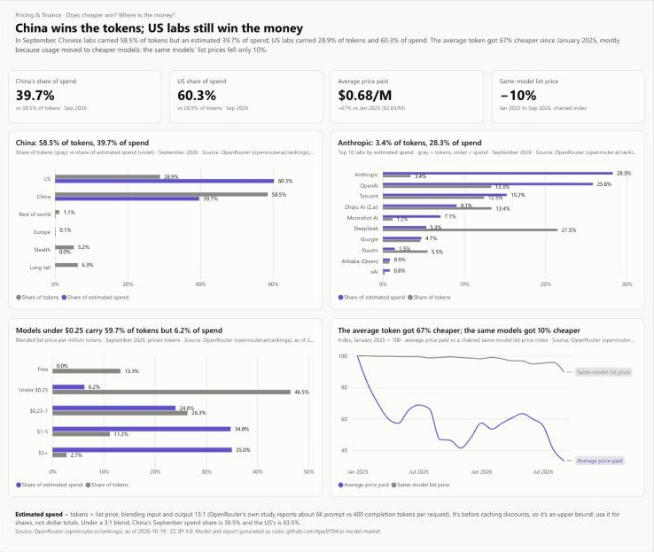
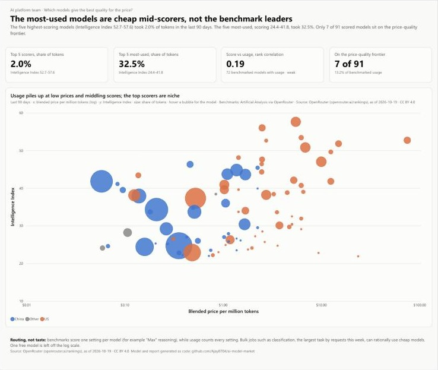
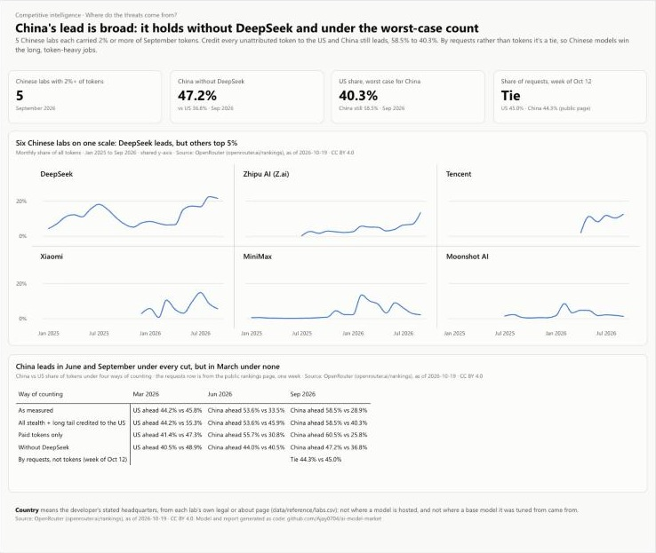
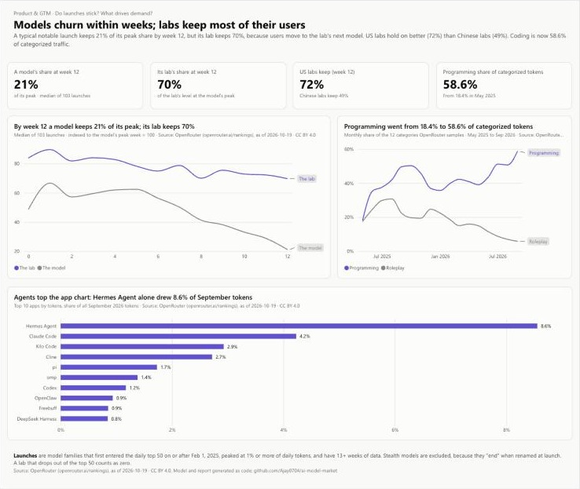

The Dashboard
The five report pages in Power BI. The Tableau Story has the same five pages, built from the same data, and the workbook is in the repository.





Every tech company now buys AI models, and the market changes every few weeks. A new model launches, prices drop, and a lab nobody watched last quarter takes a large share of usage. Leadership, finance, the AI platform team, competitive intelligence and product all ask the same question in different ways: who is winning, and what does it mean for our decisions?
I built the dashboard an in-house analyst would hand those five teams. The data is real: OpenRouter, a marketplace that routes apps’ requests to 470 AI models, publishes its daily usage through a Data API under CC BY 4.0. I used the top 50 models for every day from January 1, 2025 to October 18, 2026 (654 days and 2.37 quadrillion tokens), plus task categories, top apps, benchmarks, and 22 monthly snapshots of the price list from the Internet Archive to track prices over time.
Labs are the sellers, apps are the buyers, and tokens are the volume, so it is the same two-sided marketplace shape as my Olist e-commerce dashboard, applied to the AI industry.
Each page answers one team’s question, and its title states the answer with a verified number. The same five pages exist as a Power BI report and as a five-point Tableau Story.
| Page | Stakeholder | Question it answers |
|---|---|---|
| 1. Leadership | Strategy | Who is winning tokens, and is the market concentrating or spreading out? |
| 2. Pricing & finance | Pricing / finance | Does the cheapest model win? How does a lab’s share of tokens compare with its share of spend? |
| 3. AI platform | AI platform team | Which models give the best quality for the price? |
| 4. Competitive intel | Competitive intelligence | Are Chinese and open-weight models gaining on closed US models, and is it one lab or many? |
| 5. Product & GTM | Product / go-to-market | Do new models keep their usage after launch? Which apps and tasks drive demand? |
One DuckDB model for both tools. A Python pipeline pulls the API (capped, and stopped at the first error), then SQL builds a star schema: daily and monthly fact tables, plus model, lab, date and month dimensions. 45 model-name prefixes map to 42 organizations, each with a cited source for its country.
Definitions written down first. Token share uses all tokens, including the long tail, as the denominator. Price is a 15:1 input-to-output blend, from OpenRouter’s own 100-trillion-token study, with 3:1 as a sensitivity check. Spend is tokens at list price, so it is an upper bound and is only used for shares. Concentration is a lab HHI, read against the DOJ/FTC 1,800 line.
Hypotheses tested, not assumed. Six hypotheses were each tested with several cuts, such as crediting every unattributed token to the US, dropping DeepSeek, or switching to the 3:1 price blend. A finding made the story only if it held up under the cuts and someone could act on it. One was reframed: models fade after launch, but their labs keep most of the usage.
Designed like a tech company would. I wrote a style guide from IBM Carbon, GitLab Pajamas and Atlassian’s data-visualization guidance: insight titles, a KPI row on top, one chart per panel, fixed colors per country, and every palette run through a colorblind validator. I mocked up all five pages with the real numbers and got them approved before building anything.
Both dashboards as code. The Tableau workbook is generated as XML. The Power BI model (23 DAX measures, TMDL) and report (PBIR) are generated and published with the Fabric REST API, and the model refreshes from the repository’s CSVs on GitHub.
From OpenRouter usage, January 2025 to September 2026 (the last full month).
The biggest finding: China wins the tokens, but US labs still win the money. Chinese models are cheap and run long, token-heavy jobs, so their share of volume is far above their share of spend. Anthropic is the sharpest case: 3.4% of tokens, 28.3% of estimated spend.
| September 2026 | Share of tokens | Share of estimated spend |
|---|---|---|
| Chinese labs | 58.5% | 39.7% |
| US labs | 28.9% | 60.3% |
| Anthropic | 3.4% | 28.3% |
| DeepSeek | 21.5% | 5.3% |
What the data can’t say. OpenRouter is one marketplace, not the whole market: traffic that goes straight to OpenAI, Anthropic or Google isn’t in it. Measured by requests instead of tokens, China and the US are tied (44.3% vs 45.0% in the week the public page shows). Spend is at list price, before caching discounts, so I report shares of spend, not dollar totals.
Source: OpenRouter, rankings and Data API, CC BY 4.0, as of October 19, 2026. Benchmarks from Artificial Analysis via OpenRouter. All figures are my calculations from that data; definitions, method and checks are in the GitHub repository. Independent analysis, not affiliated with OpenRouter or any lab.
These are my own analysis, based on the findings above.
Before building any chart, I wrote a second, independent answer key in pandas that reads only the raw files. All 42 headline numbers match the DuckDB model, and 22 DAX results from the live Power BI model match it too. I also rebuilt the public openrouter.ai leaderboard from the API: 29 of 30 rows match, and the one miss is explained by the daily top-50 cut. 16 integrity checks run on every build, including an exact token reconciliation to the raw pulls.
The answer key caught a real bug. A model’s :batch or :free variant shares its base model’s ID, and both were registered under the same price key. So some months priced Claude Opus 5 at its batch rate and MiniMax M3 at $0.
Fixing the price key moved China’s September spend share from 45.4% to its true value of 39.7%. The bug was in both calculations, so they agreed for January 2025 while both were wrong. They only disagreed later because they broke a tie differently. I added a check that fails if any model has two prices for one month.
The five report pages in Power BI. The Tableau Story has the same five pages, built from the same data, and the workbook is in the repository.



